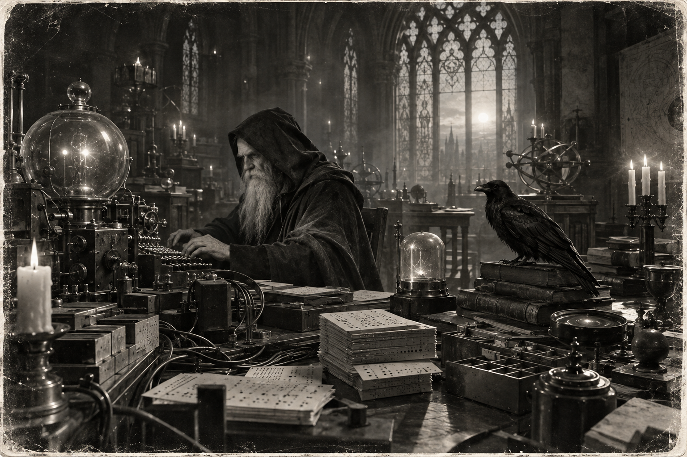

Morning Edition
6:00 AM CDTFinance & Markets
The Close
The cash desk is dark. Sunday does not print a new bar. Yahoo's last daily bar is still Friday: the Dow at 51,654.95, up 423.31 from Thursday's 51,231.64. The S&P 500 at 7,811.54, up 46.18 from 7,765.36. The Nasdaq at 27,366.17, up 172.83 from 27,193.34. That is 0.83 percent, 0.59 percent, and 0.64 percent. The 10-year cash print on the same tape: 5.244 percent, up from Thursday's 5.231. A green Friday is not a Monday thesis. Read the bar. Then leave the chart closed until the desk opens.
Source: Yahoo Finance daily bars, read October 11, 2026The Gallon
Friday's commodity bars on this feed, not a Sunday tick. Brent $104.72, up from Thursday's $104.28. WTI $91.85, up from $91.49. Gold $4,216.30, up from $4,157.00. That is about 0.4 percent, 0.4 percent, and 1.4 percent. The BBC, in its Saturday account of the diesel deal, cites AAA: the average price of diesel is $6.28 a gallon, up from last month's $5.94 and $3.68 last year. A newspaper's pump price is not a station on your corner. Read the page. Then do not price the gallon from a kitchen.
Source: Yahoo Finance futures daily bars; BBC, October 10, 2026The Brake
The cash market does not open today. The thing that does open is a control, and it is not a trade. TechCrunch, posted 2:47 p.m. PDT Saturday: Microsoft chief executive Satya Nadella wrote on X that it is time to step back and assess the trust architecture of AI. He said superintelligence cannot be treated as nested black boxes whose answers are simply accepted or rejected. The approach he outlined separates the model from the harness, externalizes the safeguards, and wants every meaningful model action documented with tamper-proof, human-readable evidence. An authorized person, he wrote, should always be able to pause or shut a model down mid-task. "We must assume a model is compromised and contain it from the start. Think of it like an emergency brake." A post is not a switch on your machine. Read the piece. Then know where your own brake is.
Source: TechCrunch, October 10, 2026World & US
The River
Kathmandu Post, updated 9:12 a.m. Sunday: four people living in a shed on the banks of the Ungilung, in Chumchet, Chumnubri Rural Municipality-6, have been unaccounted for since early morning after flooding in the Budhi Gandaki. A landslide near the Ungilung sent water through the Syar into the Budhi Gandaki. A resident, Sherap Gurung, said villagers cannot find the shed. Nepal Views, carrying RSS, quotes assistant chief district officer Netra Prasad Sharma: six bridges swept away, two motorable and four suspension, about 35 houses in Chumnubri-3, and at least 10 people out of contact. Those are two counts, not one. Do not add them. A search at morning is not a final count. Read both pages. Then leave the river in Gorkha.
Source: Kathmandu Post; Nepal Views / RSS, October 11, 2026The Reply
BBC: President Trump, outside the White House on Saturday, said he thinks it is time for Ukraine to get a new president, after President Zelensky called the Russian diesel deal a gift to President Putin. Trump said Zelensky wants to make problems for the world by authorizing attacks on Russian refineries. "He'd better damn well stop," Trump said, and suggested Ukraine get a new leader who can make a deal. Ukraine has been under martial law since 2022. Elections are suspended. Putin's envoy Kirill Dmitriev called the intervention iconic. EU foreign affairs chief Kaja Kallas said suspending sanctions gives Moscow more revenue to wage war, and that Europe will not ease pressure. The page says European foreign ministers intended to approve the biggest sanctions package since the full-scale invasion on Monday. A Downing Street spokesperson said Prime Minister Andy Burnham offered Zelensky complete solidarity and that the two agreed Russia should accept an immediate energy ceasefire. A remark on a driveway is not an election. Read the piece. Then do not run the war from a kitchen.
Source: BBC, October 10, 2026The Inland
BBC, Saturday's account, re-read this morning: Hurricane Isaias has been downgraded to a post-tropical cyclone after landfall on the northern Gulf Coast of Florida. Warnings had been discontinued as of Saturday morning. The National Weather Service, as cited on the page, expected the remnant to cross Alabama into the Tennessee Valley later Saturday and Sunday. On Saturday morning the PowerOutage tracker, as cited by the BBC, showed more than 400,000 customers dark in Florida, just over 300,000 in Alabama, and more than 100,000 in Georgia. The same page says two Pacific systems were also in play: Hurricane Simon toward Mexico's Pacific coast, and Tropical Storm Rachel toward the U.S.-Mexico border, with street flooding already reported in Newport Beach. This desk does not have a newer advisory. Chicago is not in the remnant. A Saturday power count is not this morning's count. Read the page. Then leave the Gulf where it landed.
Source: BBC, October 10, 2026
The Sunday Wizard: one clear message. The raven keeps the ledger.
"The luck rewards the move, not the wish."- The Developer's Almanac
Sagittarius Horoscope
Justin, DailyOm says Jupiter, your ruler, is teaming with the Sun to open a real door around work and reputation. People with influence are paying attention. Your optimism is reading as competence. Say yes to the bigger version of the thing you have been circling, or put your name forward. The luck is real. It rewards the move, not the wish. The catch is heat. A group plan, a friend's request, or an old feeling can run hotter than the work. Do not force the conversation that wants a slower approach. Send one clear, forward-looking note about the work. Hold the heavy heart-to-heart until you can hear yourself think. The Moon is a waxing crescent, 2 percent lit, in Scorpio on their chart. Leo is the compatible sign if you want someone to cheer the ambition without turning it into drama. The Rat-year gift is the line you save. Lucky command: git commit -m "name forward" && exit.
Tech, AI, Space & Crypto
-
The Flight
Spaceflight Now, read this morning: the Saturday target flew. A Falcon 9 lifted off from Vandenberg at 12:39 a.m. PDT Saturday, 3:39 a.m. EDT, with 21 Northrop Grumman data-transport satellites for the Space Development Agency's Tranche 1 Transport Layer A. Booster B1103, sixth flight, landed at Landing Zone 4 about 7.5 minutes later. The page calls that the 37th landing at LZ-4 and the 668th Falcon booster landing. An October 5 attempt auto-aborted at 58 seconds for off-nominal Stage Two data. Yesterday morning this desk still had a target, not a liftoff. A landed booster is not a constellation. Read the update line. Then leave the rocket in California.
Source: Spaceflight Now, October 10 launch, read October 11, 2026 -
The Hive
Astronomy, published this morning: magnitude 1.1 Mars is passing through the Beehive Cluster, M44, in central Cancer. It rises around 1 a.m. local daylight time and is already 30 degrees high in the east by 4 a.m. The cluster shines collectively at magnitude 3.7 and spans nearly 100 arcminutes. Binoculars show the orange planet among white and blue stars. In about ten minutes you can see Mars move against the fixed stars. Jupiter is closer to the horizon, leading Leo near the border with the Crab. The Moon passes 3 degrees north of Venus at 11 p.m. EDT, but both are already set. Sunrise 7:07 a.m. Sunset 6:26 p.m. Moonrise 8:13 a.m. Moonset 6:38 p.m. Moon phase, waxing crescent, 2 percent. Those clock times are for 40° N, 90° W, not a Chicago certificate. Look east before dawn only if the sky is actually dark.
Source: Astronomy, October 11, 2026 -
The Print
Coinbase spot, this desk, this morning: Bitcoin $82,927.12. Ether $2,498.83. Yesterday morning's print here was $82,770.01 and $2,493.21. That is about 0.2 percent higher, and about 0.2 percent higher. A Sunday spot is not a thesis. Inherit the print. Then close the chart.
Source: Coinbase spot, October 11, 2026
Morning Compile
- Desk dark. Friday close still stands: Dow 51,654.95, S&P 7,811.54, Nasdaq 27,366.17. 10-year 5.244%.
- Friday bars, not a Sunday tick: Brent $104.72, WTI $91.85, gold $4,216.30. AAA diesel, via BBC: $6.28.
- Nadella, Saturday: assume the model is compromised. Build the brake outside it.
- Gorkha: Kathmandu Post says four missing from a shed. RSS says six bridges, about 35 houses, at least 10 out of contact. Do not add the counts.
- Trump, Saturday: time for a new Ukrainian president. Elections are suspended. A driveway is not a ballot.
- Isaias is post-tropical and inland. Saturday power counts are not this morning's counts. Not Chicago.
- Vandenberg flew at 12:39 a.m. PDT Saturday. Twenty-one satellites. B1103 landed. Yesterday's target is no longer a target.
- Mars is in the Beehive before dawn. Waxing crescent, 2 percent. Bitcoin $82,927.12.
- One clear message. Then stop. Then breakfast.